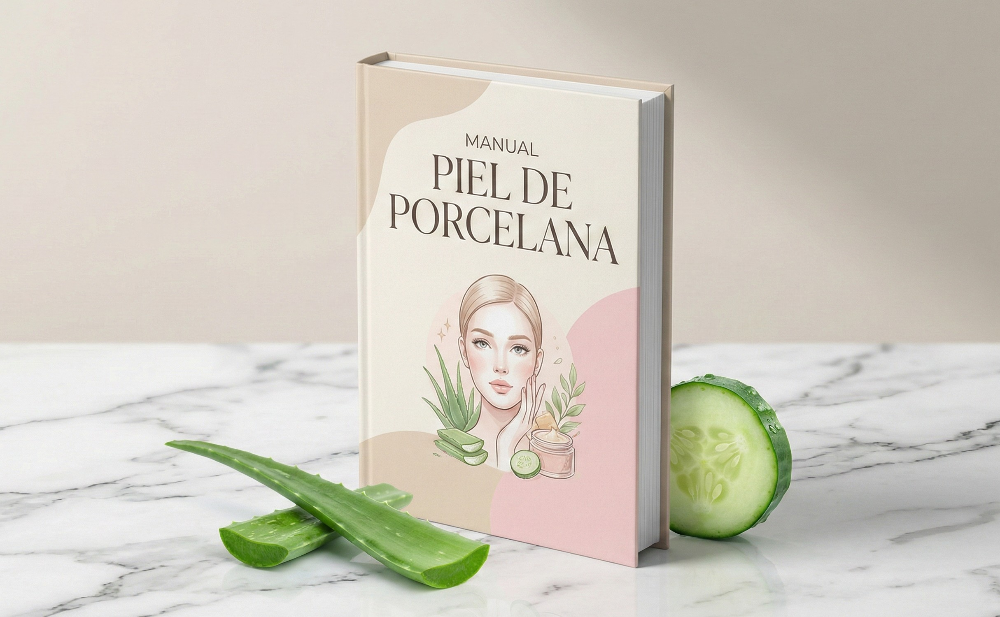

Descubre el Secreto Coreano para una "Piel de Porcelana" en Casa
Elimina Manchas, Acné y Poros Abiertos con ingredientes de tu cocina.

QUIERO MI PIEL PERFECTA 👉
Mira la Transformación 👇
Desliza para ver el cambio real.
Resultados de Personas Reales
"Probé de todo para mi acné hormonal. En 2 semanas con la receta de arroz, mi piel cambió por completo. Estoy enamorada."
"Mis manchas de sol en los pómulos se aclararon un 80%. No gasté más en cremas caras. El manual va directo al punto."
"Sencillo, barato y efectivo. La mascarilla tensora me quitó 5 años de encima."
Preguntas Frecuentes
¿Necesito ingredientes caros?
No. El 90% de las recetas usan ingredientes que ya tienes en tu cocina o que puedes comprar en el supermercado por menos de $2 dólares (arroz, aloe vera, cúrcuma, miel, etc.).
¿Funciona para piel grasa o sensible?
Sí. El manual incluye variaciones específicas para piel seca, grasa, mixta y sensible. Todo es natural y no agresivo.
¿Cómo recibo el Manual?
El acceso es inmediato. En cuanto realizas el pago, recibes un correo electrónico con el enlace para descargar el Manual en tu celular, tablet o computadora.
¿Tengo garantía?
Sí, tienes 7 días de garantía incondicional. Si no te gusta el contenido, te devolvemos el 100% de tu dinero sin preguntas.
ÚLTIMA OPORTUNIDAD
Llévate todo el paquete hoy.
Antes: $47.00
HOY: $9.00
DESCARGAR AHORA 📥